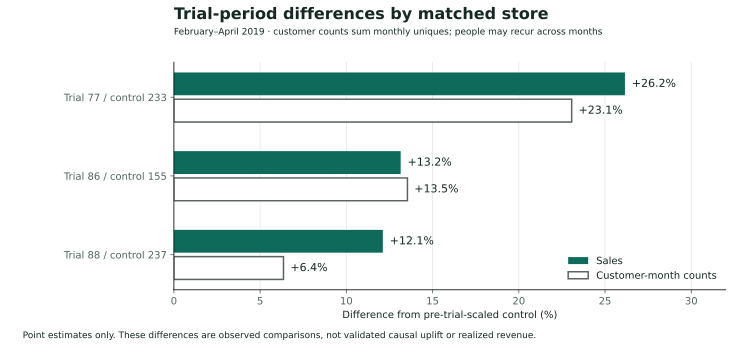
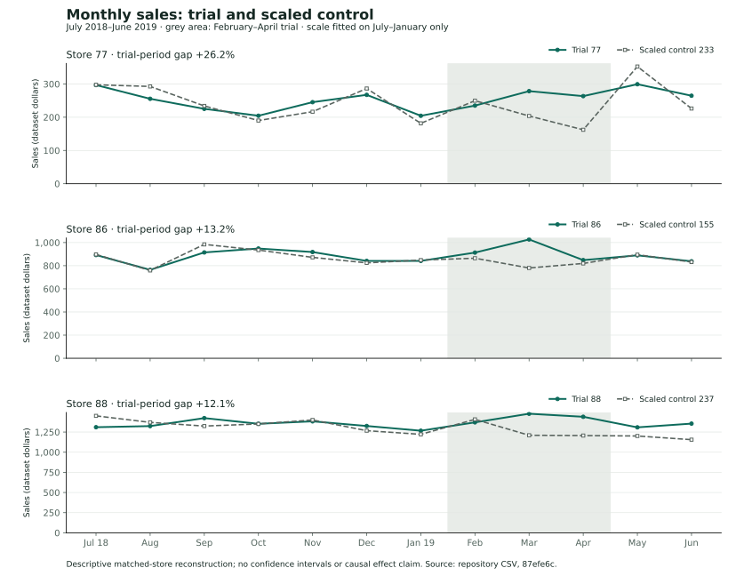
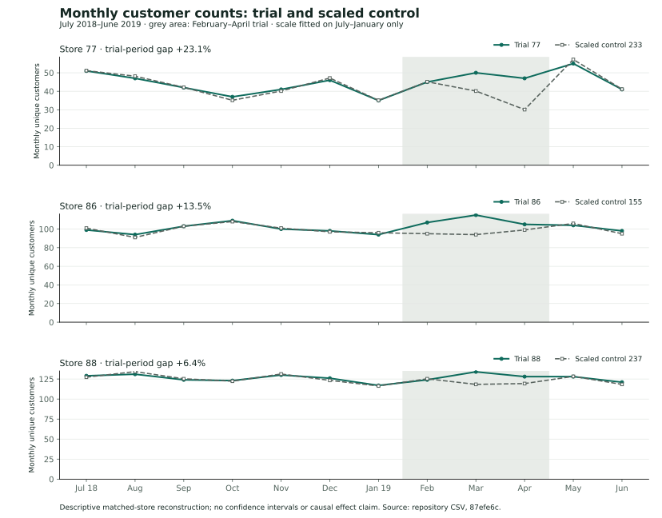

77 / 233 · Stronger relative signal
Sales are 26.2% above the scaled comparison, alongside 23.1% more customer-month counts. Sales per customer-month are approximately 2.5% higher. The combined pre-trial match score is 0.968.
02 / Commercial analytics · Quantium virtual job simulation
A matched-store analysis of a retail layout trial: select a credible comparison, separate sales from customer activity, and turn the evidence into a rollout recommendation.
The business question
The simulation asks a category manager to evaluate trial stores 77, 86, and 88 during February–April 2019. A sales increase alone is insufficient: the comparison store, the pre-trial pattern, and the customer count all affect the interpretation.
My original R Markdown builds monthly measures, matches stores, scales the comparison, and examines the trial. This case study adds a documented reconstruction from the repository’s raw transaction CSV, with corrections to the original code.
Scope: This is a virtual job simulation. The updated figures are descriptive matched-store comparisons; they do not establish a causal effect, statistical significance, or realized client revenue.
Findings & supporting evidence
Recomputed from the public transaction file. All gaps use the sum of February–April sales or monthly customer counts against a control scaled on July–January.

| Trial | Control | Observed sales | Scaled control | Sales gap | Gap % |
|---|---|---|---|---|---|
| 77 | 233 | $777.00 | $615.91 | +$161.09 | +26.2% |
| 86 | 155 | $2,788.20 | $2,464.16 | +$324.04 | +13.2% |
| 88 | 237 | $4,286.80 | $3,823.55 | +$463.25 | +12.1% |
Sales are 26.2% above the scaled comparison, alongside 23.1% more customer-month counts. Sales per customer-month are approximately 2.5% higher. The combined pre-trial match score is 0.968.
Sales are 13.2% above the comparison and customer-month counts are 13.5% higher. Sales per customer-month are approximately 0.3% lower. The match score is 0.943; inspect traffic and repeat shopping before attributing the difference to basket spending.
Sales are 12.1% above the comparison and customer-month counts are 6.4% higher, implying approximately 5.4% higher sales per customer-month. The match score is lower at 0.803; the next candidate scores 0.799, making comparator sensitivity especially relevant.
The positive direction holds when salsa products are excluded and stores are rematched. This supports further testing. It does not resolve alternative explanations such as promotions, local demand, pricing, or differences between stores.


| Trial / control | Observed customer-months | Scaled control customer-months | Customer gap % | Sales / customer-month gap % |
|---|---|---|---|---|
| 77 / 233 | 142 | 115.39 | +23.1% | +2.5% |
| 86 / 155 | 327 | 288.00 | +13.5% | -0.3% |
| 88 / 237 | 386 | 362.94 | +6.4% | +5.4% |
The main reconstruction retains all products, including salsa. An alternative excludes product names containing “salsa,” repeats monthly aggregation, rematches stores, and rescales controls. The selected control IDs remain the same; the estimated gaps change.
| Trial | Control | All products | Excluding salsa |
|---|---|---|---|
| 77 | 233 | +26.2% | +27.8% |
| 86 | 155 | +13.2% | +11.6% |
| 88 | 237 | +12.1% | +14.2% |
Method & analytical judgment
Start with 264,836 product line items. Remove one exact duplicate and two 200-unit purchases from the same outlier customer. Retain 264,833 rows, 72,636 unique customers, and all product names. Excel serial dates resolve to July 2018–June 2019.
Aggregate sales and units; count distinct customer IDs and transaction IDs within each store-month. Keep line items, transactions, monthly customers, and people distinct. The matched analysis uses stores with 12 observed months.
Exclude all three trial stores from the candidate pool. For both sales and customers, combine Pearson correlation with normalized magnitude similarity over July–January. Average the four components equally, rank candidates, and select the highest score; break ties by store ID.
Fit separate sales and customer scale factors on the seven pre-trial months. Apply them to controls in February–April. Preserve the sign of the difference and report the aggregate gap, followed by a product-scope sensitivity check.
Monthly aggregates were independently checked against a separate CSV parser using integer-cent sales arithmetic. Array calculations rechecked all displayed scale factors and trial totals. The original project uses R; the published reconstruction ran in Python as an independent verification. A revised R companion is included and has not been executed in this environment.
measureOverTimeSales <- measureOverTime followed by := can mutate data.table objects by reference. The revised method keeps monthly measures intact.QVI_data.csv is absent. This reconstruction uses the available raw transaction CSV with explicit cleaning and product scope; it is not claimed to reproduce the original run exactly.Limits for a rollout decision: Three non-randomized trials, a short comparison window, and matched controls leave confounding and sampling uncertainty unresolved. Balanced-panel eligibility depends on full-year coverage. Use a confirmatory design and check alternative controls, promotions, costs, and margin before committing to rollout.
Code, inputs & audit trail
Raw inputs are pinned to repository commit 87efe6c. Only store-level aggregates are republished here; the original charts and R Markdown are retained separately from the revised snapshot.
The original chart titles mentioning “95% confidence” are preserved in the archive as historical exports. They are not used as validated uncertainty estimates. No evidence reviewed here supports an annual $200K revenue projection.